Contents
Specifying nonlinear constitutive equations for a linearly elastic material using Symbolic Math Toolbox
Introduction
Specifying constitutive equations for the PDE Toolbox can be complicated if the equations are involved. A simple cantilever example is used to demonstrate how the Helper classes leverage Symbolic Math Toolbox (R2012b+) for convenient input of the equations. This cantilever example is based on the geometry described in Reference 2 and
- Specifies nonlinear constitutive equations for a linearly elastic material using Symbolic Math Toolbox (R2012b or greater)
- Shows a convenient way to specify boundary conditions using named boundaries
- Demonstrates a simple nonlinear solution in the reference configuration using accurate jacobians constructed using the Symbolic Math Toolbox. The solution is matched against the result in figure 3 in Reference 2
- Demonstrates that the linear solution is not adequate for the given load
Requirements: PDE Toolbox, Helper classes for PDE Toolbox, Symbolic Math Toolbox (R2012b and greater)
Formulation
See Reference 1 or any other continuum mechanics reference for details
1. PDE :
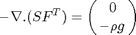
where 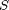 is the 2nd Piola-Kirchoff Stress tensor, 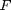 is the deformation gradient, 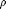 is the density, and 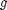 is the acceleration due to gravity
PDE Toolbox requires the formulation to be specified in the so-called reference configuration (as opposed to deformed configuration). Therefore the above form is used.
is written in matrix form as
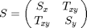
2. Constitutive Equations
The 2nd Piola-Kirchoff stress tensor is in fact work conjugate with the Green-Lagrange strain tensor so we can express in terms of a simple constitutive relation
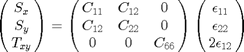
Green-Lagrange strain tensor
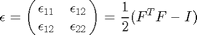
Deformation gradient; 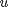 is the displacement
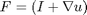
Material constants, 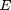 - Modulus of Elasticity, 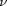 = Poisson's ratio
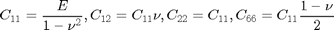
3. Geometry and BC
The example is a simple cantilever of unit width fixed on the left end and with a load distributed on the free edge as shown in the picture below (not to scale).
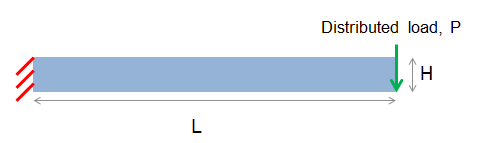
References : (1) http://geo.mff.cuni.cz/vyuka/Martinec-ContinuumMechanics.pdf, (2) http://www.lajss.org/index.php/LAJSS/article/download/240/208
See exampleGeometries.m and exampleFormulation.m on how to use the Helper classes used in this example
% function [] = cantilever()
import pdetbplus.*; % access Helper classes
Geometry of cantilever
length
L = 10; % height H = 0.1; % B = 1; unit width is used. Therefore weight for area dA = rho*g*dA p{1} = pointObject(0,0); % lower left p{2} = p{1} + [0,H]; % upper left p{3} = p{2} + [L,0]; % upper right p{4} = p{3} - [0,H]; % lower right a{1} = lineObject('wall',p{1},p{2}); % fixed edge a{2} = lineObject('top',p{2},p{3}); % top a{3} = lineObject('free',p{3},p{4}); % hanging edge a{4} = lineObject('bottom',p{4},p{1}); % bottom for kk=1:length(a) a{kk}.leftRegion = 'nonMeshedSpace'; % area that will not be meshed a{kk}.rightRegion = 'beamMaterial'; % beam material end cantilever = geometryObject('beam',a); % helper class cantilever.exteriorRegion = 'nonMeshedSpace'; % necessary step for initmesh() cantilever = cantilever.initMesh('showMesh',false,'Hmax',H/10); % H/10 should give an accurate enough answer
warning: Approximately 20000 triangles will be generated.
Coefficients
N = 2; % output dimension coeff = coeffsObject(cantilever, N); % helper class
% Define equations using Symbolic Math Toolbox; To avoid errors, make % this function standalone instead of a nested function function [equations,variables] = elasticitySymbolicFunction(displayEquations) displayEquations = true; for k=1:2:length(varargin) a = varargin(k); b = varargin(k+1); if strcmp(a,'displayEquations') displayEquations = b{1}; end end %% PDE input, define eq and input; % *Reserved keywords: x,y,time,ddx,ddy,d[variable]dx,d[variable]dy* % *specify the Div operator as [ddx ddy] syms ddx ddy real; % user input begins % define Modulus of Elasticity, Poisson's ration, Density, Acceleration % due to gravity syms E nu rho g real; syms u v dudx dudy dvdx dvdy real; %% material constants G = E/(1-nu^2); C11 = G; C12 = G*nu; C22 = G; C66 = G*(1-nu)/2; %% deformation gradient F = sym(eye(2)) + [dudx dudy;dvdx dvdy]; %% Green-Lagrange strain tensor epsilon = 1/2*expand(F.'*F - sym(eye(2))); epsilon11 = epsilon(1,1); epsilon22 = epsilon(2,2); epsilon12 = epsilon(1,2); %% 2nd Piola–Kirchhoff stress tensor Sx = C11*epsilon11 + C12*epsilon22; Sy = C12*epsilon11 + C22*epsilon22; Txy = C66*2*epsilon12; % watch out for factor of 2 for engineering strain PK2 = [Sx Txy;Txy Sy]; PK1 = PK2*F'; equations = -[ddx ddy]*PK1 + [0 -rho*g]; %% plug in values % Material properties for Iron; E = 30e6 lbs/cm^2, nu = 0.3 equations = subs(equations,{E,nu,rho,g},[30e6,0.3,0.00074,32.2*12]); if displayEquations display Equations_with_values pretty(equations'); end variables = [u v]; end
Specify equations that are symbolically defined in elasticitySymbolicFunction. Display equations is turned on by default. Always verify that the equations corresponding to coefficients are what you expect
coeff = coeff.addCoeff('region','beamMaterial','symbolicEquationFunction',@elasticitySymbolicFunction); % requires Symbolic Math Toolbox
Equations_with_values
+- -+
| - ddy (dudy #2 + (1200000 dudx + 1200000) #1) - ddx ((dudx + 1) #3 + 1200000 dudy #1) |
| |
| - ddx (dvdx #3 + (1200000 dvdy + 1200000) #1) - ddy ((dvdy + 1) #2 + 1200000 dvdx #1) |
+- -+
where
dudy dvdx dudx dudy dvdx dvdy
#1 == ---- + ---- + --------- + ---------
2 2 2 2
2 2
#2 == 600000 dudy + 600000 dvdy + 1200000 dvdy
2 2
#3 == 600000 dudx + 1200000 dudx + 600000 dvdx
Cmatrix
+- -+
| 2 2 2 |
| 600000 dudx + 1800000 dudx + 600000 dudy + 600000 dvdx + 1200000, 600000 dudy + #2, 600000 dvdx, 0 |
| |
| 2 |
| 1200000 dudy + 600000 dvdx + 600000 dudx dudy + 600000 dvdx dvdy, #1 + 600000 dudy , 600000 dvdy + 600000, 0 |
| |
| 2 |
| 600000 dudy + 1200000 dvdx + 600000 dudx dvdx + 600000 dudy dvdy, 600000 dvdy + 600000, #1 + 600000 dvdx , 0 |
| |
| 600000 dudy dvdx, 600000 dvdx + 600000 dudy (dvdy + 1), #2, 600000 (dvdy + 1) (dvdy + 2) |
+- -+
where
2
#1 == 600000 (dvdy + 1)
#2 == 600000 dvdx (dvdy + 1)
Fvector
+- -+
| 0, 0 |
+- -+
Boundary conditions for linear problem
Load = -4; % Note: "-" sign for downward load % instantiate boundaryConditionObject for convenient definition of BCs bc = boundaryConditionObject(cantilever, N); % helper class % Dirichlet conditions are specified for wall. Other ways to specify BCs % are to specify for function for wall or to specify in terms of regions bc = bc.addBC('name','wall','dirichlet',[0;0]); % Dirichlet condition on wall % uniformly distributed load on the "free" boundary. Note: Reference 2 had % a point load but for demonstration purpose we use a distributed load that % should provide a close enough answer bc = bc.addBC('name','free','neumann',[0;Load/H]); numNodes = size(cantilever.mesh.p,2);
Linear solve
Using solution = 0, to set d/dx,d/dy terms in the C matrix to 0 effectively using the infinitesimal strain tensor (linear). Thus we could have used the linear tensor instead of the Green-Lagrange tensor . However the purpose of this example is to demonstrate convenient symbolic processing of general constitutive equations. Consequently the matrix form of assempde() in PDE Toolbox is used to solve
[Q,G,Hmat,R] = bc.getMatrices('u',zeros(N*numNodes,1)); % 'Hmat' because 'H' has alerady been defined [K,M,F] = coeff.getMatrices('u',zeros(N*numNodes,1)); u=assempde(K,M,F,Q,G,Hmat,R); % use matrix form to solve
Post process linear solution
uu = reshape(u,numNodes,[]); % u is numNodes x 2 LinearVerticalDeflectionxy = cantilever.createXYFunctionFromNodalSolution(uu(:,2)); % create a function from solution LinearHorizontalDeflectionxy = cantilever.createXYFunctionFromNodalSolution(uu(:,1)); % create a function from solution LinearVerticalDeflectionTip = LinearVerticalDeflectionxy(L-eps,H-eps); % vertical deflection LinearHorizontalDeflectionTip = LinearHorizontalDeflectionxy(L-eps,H-eps); % horizontal deflection fprintf('Linear solver: load = %e, Tip Y deflection = %e, Tip X deflection = %e\n',Load,LinearVerticalDeflectionTip,LinearHorizontalDeflectionTip); % make a copy of cantilever that we can adjust cantileverAfterLinearSolve = cantilever; cantileverAfterLinearSolve.mesh.p(1:2,:) = cantileverAfterLinearSolve.mesh.p(1:2,:) + uu(:,1:2)'; % update geometry figure(1); cantileverAfterLinearSolve.plot('showMesh',true); axis equal;grid on; % show deflected beam title('linear deformed geometry');
Linear solver: load = -4.000000e+00, Tip Y deflection = -1.316130e+01, Tip X deflection = 9.870573e-02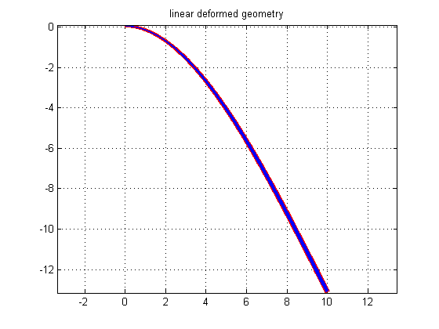
Solve using a nonlinear solver
we could use pdenonlin() that uses an approximate jacobian but instead, we use a simple newton solver because in this example, we have the exact jacobian available since we used a symbolic description of the equations.
use a simple load stepping scheme to get the nonlinear solution
lambda = 0; lambdastep = 0.05; verticalDeflectionTip = []; horizontalDeflectionTip = []; loads = []; iter = 1; while lambda <= 1 fprintf('iter = %d\n',iter); lambda = min(1,lambda+lambdastep); bc = boundaryConditionObject(cantilever, N); % helper class % Dirichlet conditions are specified for wall. Other ways to specify BCs % are to specify for function for wall or to specify in terms of regions bc = bc.addBC('name','wall','dirichlet',[0;0]); % Dirichlet condition on wall bc = bc.addBC('name','free','neumann',[0;lambda*Load/H]); if iter == 1 [ucan,converged] = solveGeomNonlinear('coeff',coeff,'bc',bc); % first time, there is no initial guess else [ucan,converged] = solveGeomNonlinear('coeff',coeff,'bc',bc,'uinitial',u); % there is an initial guess end if converged u = ucan; uu = reshape(u(1:2*numNodes),numNodes,[]); % this is displacement verticalDeflectionxy = cantilever.createXYFunctionFromNodalSolution(uu(:,2)); horizontalDeflectionxy = cantilever.createXYFunctionFromNodalSolution(uu(:,1)); verticalDeflectionTip = [verticalDeflectionTip verticalDeflectionxy(L-eps,H-eps)]; horizontalDeflectionTip = [horizontalDeflectionTip horizontalDeflectionxy(L-eps,H-eps)]; loads = [loads lambda*Load]; fprintf('NonLinear solver: load = %e, Tip Y deflection = %e, Tip X deflection = %e\n',loads(end), verticalDeflectionTip(end),horizontalDeflectionTip(end)); if lambda == 1 break; end iter = iter + 1; lambdastep = lambdastep*2; else fprintf('step failed, rerunning with smaller step\n'); lambda = lambda - lambdastep; lambdastep = lambdastep/1.2; end end if converged cantileverAfterNonLinearSolve = cantilever; % make a copy of cantilever that we can adjust cantileverAfterNonLinearSolve.mesh.p(1:2,:) = cantileverAfterNonLinearSolve.mesh.p(1:2,:) + uu'; % update geometry % plot nonlinearly deformed cantilever figure(2); cantileverAfterNonLinearSolve.plot('showMesh',true); axis equal;grid on; title('nonlinear deformed geometry'); % Plot deformation curves as in Reference, we get a good match. % The plots also show that linear analysis for this problem is not % adequate figure(3); plot(abs(verticalDeflectionTip),abs(loads),'-ro',abs(horizontalDeflectionTip),abs(loads),'-ko',... abs(LinearVerticalDeflectionTip/Load*loads),abs(loads),'-r*',abs(LinearHorizontalDeflectionTip/Load*loads),abs(loads),'-k*'); title('|Load| vs |Vertical and horizontal tip deflections| for linear and nonlinear cases'); legend('verticalNonlinear','horizontalNonlinear','verticalLinear','horizontalLinear','Location','SouthEast'); end
iter = 1 |du|/|u| = 1.000000e+00 |rhs| = 6.164414e-02 |du|/|u| = 3.076260e-02 |rhs| = 1.682646e+03 |du|/|u| = 1.186424e-03 |rhs| = 1.038252e+01 |du|/|u| = 4.236666e-04 |rhs| = 1.158997e-03 |du|/|u| = 1.330378e-07 |rhs| = 3.072123e-04 Found geometrically consistent solution NonLinear solver: load = -2.000000e-01, Tip Y deflection = -6.554005e-01, Tip X deflection = -2.088225e-02 iter = 2 |du|/|u| = 6.653890e-01 |rhs| = 1.232883e-01 |du|/|u| = 3.988329e-02 |rhs| = 6.670912e+03 |du|/|u| = 2.734685e-03 |rhs| = 1.529440e+02 |du|/|u| = 1.300057e-02 |rhs| = 1.094978e-01 |du|/|u| = 1.666419e-04 |rhs| = 2.713835e+00 |du|/|u| = 9.410111e-05 |rhs| = 5.806670e-04 Found geometrically consistent solution NonLinear solver: load = -6.000000e-01, Tip Y deflection = -1.902557e+00, Tip X deflection = -2.053010e-01 iter = 3 |du|/|u| = 5.594417e-01 |rhs| = 2.465710e-01 |du|/|u| = 5.902878e-02 |rhs| = 2.369524e+04 |du|/|u| = 5.226108e-03 |rhs| = 1.587378e+03 |du|/|u| = 2.516266e-02 |rhs| = 1.040342e+01 |du|/|u| = 3.692663e-03 |rhs| = 3.127361e+01 |du|/|u| = 1.705186e-02 |rhs| = 2.508812e+00 |du|/|u| = 1.131583e-03 |rhs| = 2.353694e+01 |du|/|u| = 5.195350e-03 |rhs| = 1.672603e-01 |du|/|u| = 1.026803e-04 |rhs| = 2.448294e+00 |du|/|u| = 4.447223e-05 |rhs| = 1.043281e-03 |du|/|u| = 4.728060e-08 |rhs| = 1.793575e-04 Found geometrically consistent solution NonLinear solver: load = -1.400000e+00, Tip Y deflection = -3.887122e+00, Tip X deflection = -9.258453e-01 iter = 4 |du|/|u| = 4.821101e-01 |rhs| = 4.931531e-01 |du|/|u| = 6.946800e-02 |rhs| = 5.539957e+04 |du|/|u| = 9.978710e-03 |rhs| = 6.494277e+03 |du|/|u| = 2.067321e-02 |rhs| = 1.566894e+02 |du|/|u| = 2.496696e-02 |rhs| = 3.902823e+01 |du|/|u| = 9.499701e-03 |rhs| = 3.721649e+02 |du|/|u| = 3.280304e-02 |rhs| = 8.875359e+00 |du|/|u| = 2.449357e-03 |rhs| = 2.734039e+02 |du|/|u| = 1.505073e-02 |rhs| = 6.103125e-01 |du|/|u| = 2.244486e-04 |rhs| = 3.660182e+01 |du|/|u| = 5.699847e-04 |rhs| = 1.012964e-02 |du|/|u| = 6.147074e-07 |rhs| = 6.745862e-02 |du|/|u| = 8.598320e-09 |rhs| = 2.146114e-07 Found geometrically consistent solution NonLinear solver: load = -3.000000e+00, Tip Y deflection = -6.022460e+00, Tip X deflection = -2.470386e+00 iter = 5 |du|/|u| = 1.661365e-01 |rhs| = 3.082207e-01 |du|/|u| = 8.375256e-03 |rhs| = 5.216883e+03 |du|/|u| = 3.634256e-03 |rhs| = 8.847272e+01 |du|/|u| = 1.488717e-02 |rhs| = 1.758955e+00 |du|/|u| = 4.585662e-04 |rhs| = 7.425877e+01 |du|/|u| = 1.867965e-03 |rhs| = 5.397545e-02 |du|/|u| = 8.354744e-06 |rhs| = 1.144205e+00 |du|/|u| = 8.748077e-07 |rhs| = 2.907853e-05 Found geometrically consistent solution NonLinear solver: load = -4.000000e+00, Tip Y deflection = -6.700613e+00, Tip X deflection = -3.210784e+00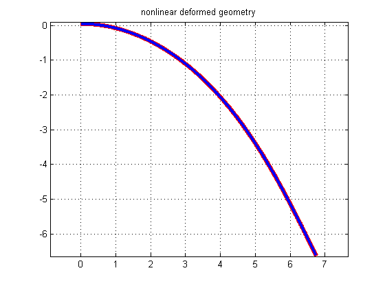 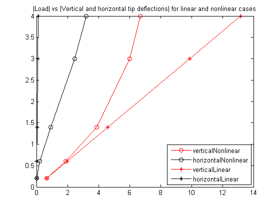
end